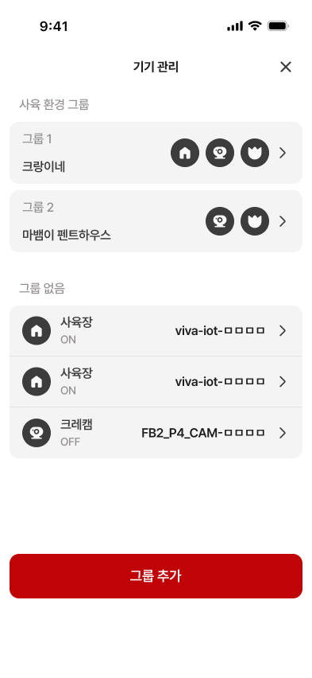
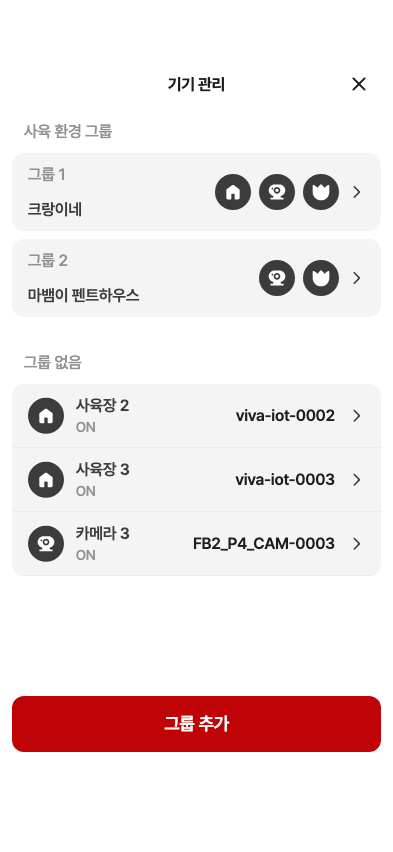

19 · 그룹 생성 결과
18번 확정 · 0.107.24+235 수정·확정 완료
수정·검증 완료
① 그룹 카드 사이8pt, 마지막 카드→다음 제목36pt 확인
② 그룹 없음 목록: 회색 #F4F4F4 배경과 둥근 외곽12pt 적용 완료
사용자 지시에 따라 재승인 없이 확정했습니다.
Figma 원본 · 393×852
19 · 수정한 제품 위젯 캡처
폰트·색상·아이콘 크기와 하단 버튼 배치를 측정했습니다. 단일 그룹에서도 다음 섹션까지36pt 간격을 확인했습니다.
앱 이미지는 QA 데이터를 주입한 제품 위젯 캡처입니다. 운영 서버 생성 및 실제 시뮬레이터 촬영은 수행하지 않았습니다. ON/OFF와 기기 이름 번호는 기존 승인 정책에 따른 차이입니다.
상세 측정표와 검증 범위